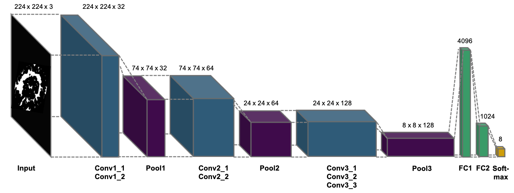

About Project
Detailed description of purpose of our tool, users who can benefit from the tool, and the data used to train and develop the model.
Learn how we can automate your defect classification
Detailed description of purpose of our tool, users who can benefit from the tool, and the data used to train and develop the model.
Understand the value of this tool to engineers and semiconductor manufacturers for overall yield and efficiency improvement.
Science and details behind the model and how it works including data requirements, model inputs, data augmentation, and expected outcome.
Test your live data against our developed algorithm. You can submit an individual wafer or a set of wafers to the model to see results.
If you have more questions about the model or would like to understand details about the model, please connect with the developers.